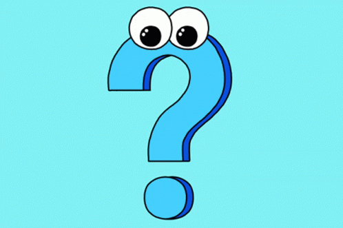
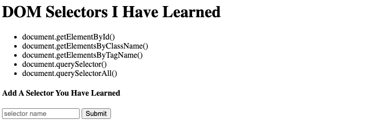
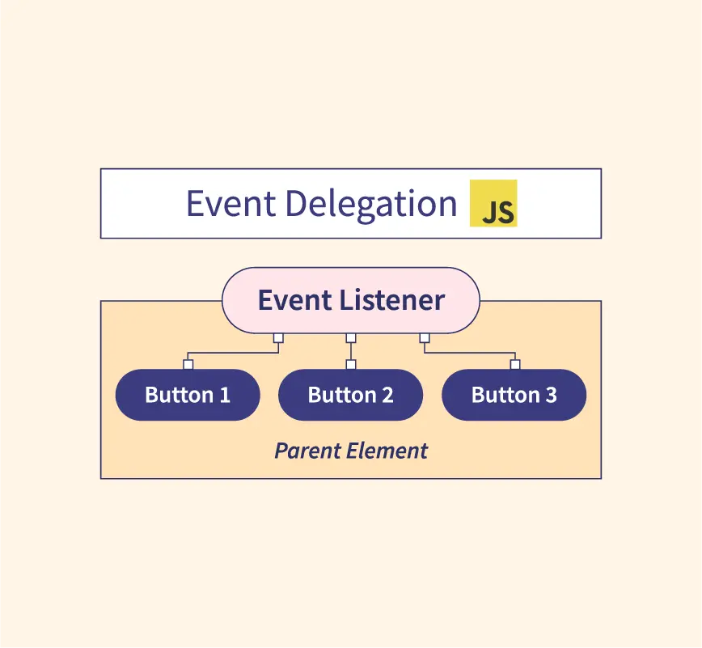
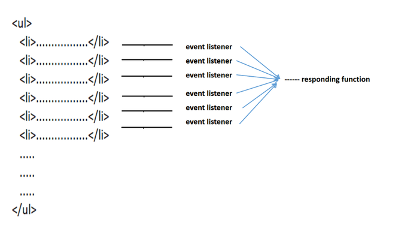

What is the Document Object Model (DOM)?

The Document Object Model (DOM) is a programming interface for web documents. It represents the structure of a webpage as a tree of objects, where each element (like headings, paragraphs, and images) becomes a node that can be manipulated using JavaScript. This allows developers to dynamically change the content, structure, and styling of a webpage, enabling interactive and responsive user experiences.
How do you select an element from the DOM?

To select an element from the DOM, we can use JavaScript methods such as `getElementById`, `getElementsByClassName`, `getElementsByTagName`, `querySelector`, or `querySelectorAll`. For example, `document.getElementById('elementId')` selects an element with a specific ID, while `document.querySelector('.className')` selects the first element matching a CSS selector. These methods allow us to target and manipulate specific elements on a webpage.
To select an element from the DOM, we can use JavaScript methods such as `getElementById`, `getElementsByClassName`, `getElementsByTagName`, `querySelector`, or `querySelectorAll`. For example, `document.getElementById('elementId')` selects an element with a specific ID, while `document.querySelector('.className')` selects the first element matching a CSS selector. These methods allow us to target and manipulate specific elements on a webpage.
What is event delegation in the context of the DOM, and why is it useful?

Event delegation in the DOM is a technique where you attach a single event listener to a parent element to manage events triggered by its child elements. Instead of adding individual listeners to each child element, the event is captured as it bubbles up through the DOM, allowing the parent to handle it.
Why it’s useful:
1. Efficiency: Reduces memory usage by minimizing the number of event listeners, especially when dealing with many child elements.
2. Dynamic Elements: Handles events on dynamically added elements without needing to reattach listeners.
3. Simplifies Code: Centralizes event handling, making code cleaner and easier to maintain.
Event delegation in the DOM is a technique where you attach a single event listener to a parent element to manage events triggered by its child elements. Instead of adding individual listeners to each child element, the event is captured as it bubbles up through the DOM, allowing the parent to handle it.
Why it’s useful:
1. Efficiency: Reduces memory usage by minimizing the number of event listeners, especially when dealing with many child elements.
2. Dynamic Elements: Handles events on dynamically added elements without needing to reattach listeners.
3. Simplifies Code: Centralizes event handling, making code cleaner and easier to maintain.
How do you manipulate an element's attributes and styles using the DOM?

To manipulate an element's attributes and styles using the DOM, we can use methods like `setAttribute()` and properties like `style`. For example, we can change an attribute using `element.setAttribute('attribute', 'value')`, or directly modify styles using
`element.style.property = 'value'`. This allows us dynamically update the appearance or behavior of elements on the page.
To manipulate an element's attributes and styles using the DOM, we can use methods like `setAttribute()` and properties like `style`. For example, we can change an attribute using `element.setAttribute('attribute', 'value')`, or directly modify styles using
`element.style.property = 'value'`. This allows us dynamically update the appearance or behavior of elements on the page.